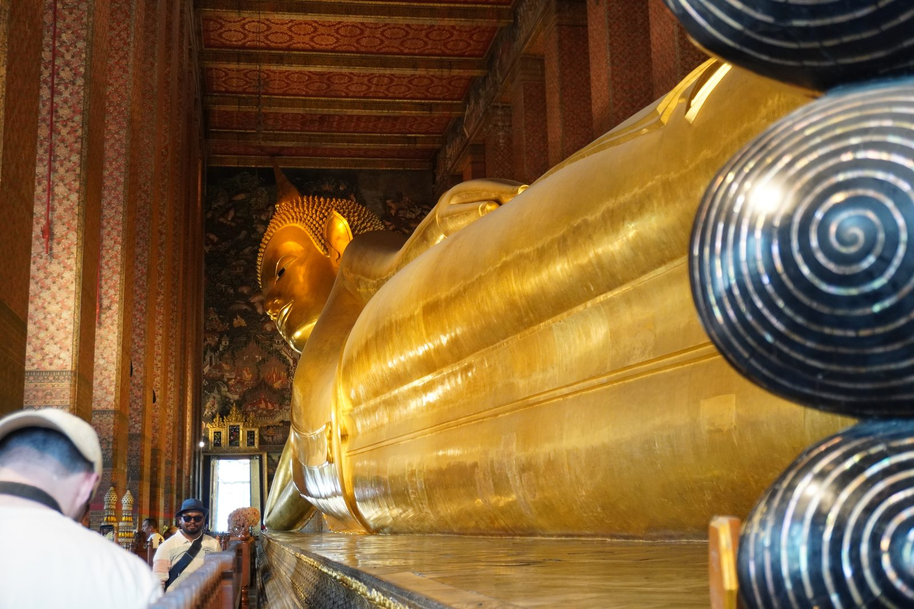
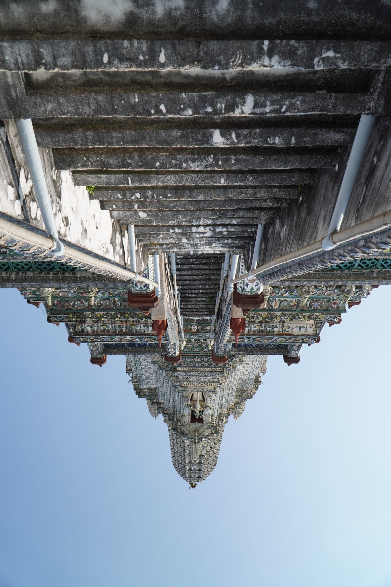
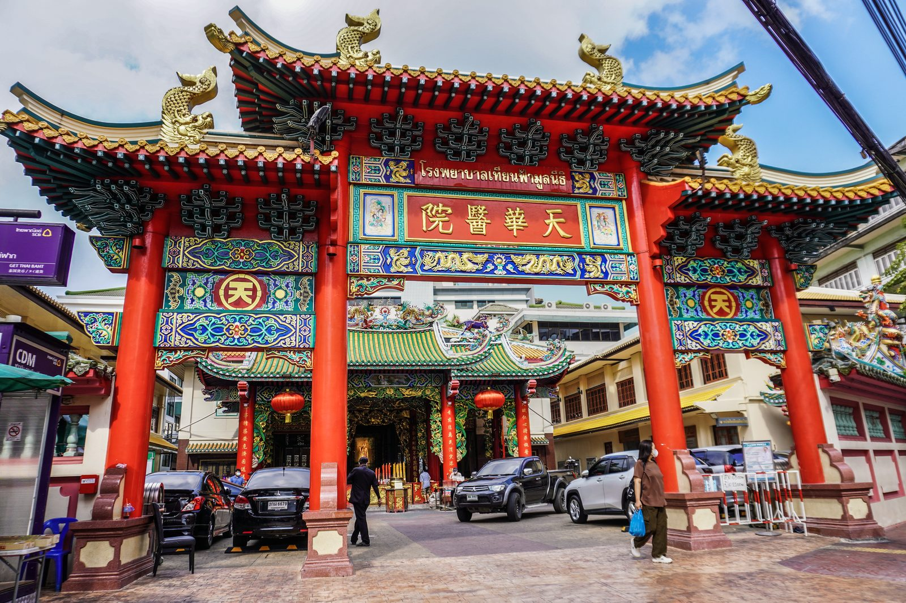

Il nostro viaggio non poteva che iniziare da questa splendida città, che non smetterà mai di stupirci e catturarci ogni volta come se fosse la prima. Il primo viaggio in Thailandia l'abbiamo fatto a marzo 2025 ed esattamente un anno dopo eccoci di nuovo qui. Questo luogo ti affascina fin dall'inizio: dal caos delle auto e dei tuktuk che sfrecciano lungo le strade, ai mercati notturni così ricchi di profumi, sapori e colori, fino alla pace e alla quiete dei luoghi sacri e dei templi, così dorati da riflettere il sole cocente che batte su questa città.
Sei giorni a Bangkok. Sembrano tanti, ma non bastano mai.

Il Wat Arun (Tempio dell'Alba) illuminato nella notte di Bangkok
I templi: dove l'oro incontra il cielo
Bangkok è una città che vive a mille all'ora, eppure sa fermarti di colpo. Basta varcare il cancello di uno dei suoi templi per ritrovarsi in un altro mondo, sospeso tra devozione e bellezza assoluta.
Il Grand Palace e il Wat Phra Kaew sono la prima tappa obbligata, e si capisce subito perché. Il Tempio del Buddha di Smeraldo è uno di quei luoghi che superano qualsiasi fotografia vista in anticipo: i mosaici colorati, le guglie dorate, i guardiani mitologici all'ingresso, tutto parla di una civiltà che ha fatto dell'arte sacra una forma di perfezione.
A pochi passi si trova il Wat Pho, il tempio del Buddha Reclinato. Quarantasei metri di statua dorata che occupa un'intera sala: bisogna entrarci dentro per capirne davvero le proporzioni.

Il Buddha Reclinato del Wat Pho: 46 metri di pura maestosità dorata
Sul lato opposto del fiume, il Wat Arun — il Tempio dell'Alba — è forse il più fotogenico di tutti, soprattutto al tramonto quando la luce arancione lo avvolge e i frammenti di ceramica colorata sulla sua torre centrale si accendono come migliaia di piccoli specchi.

La vertiginosa scalinata del Wat Arun: salire è quasi un atto di fede
Non meno significativi il Wat Traimit, che custodisce il Buddha d'Oro massiccio da cinque tonnellate e mezzo — una statua che per secoli rimase nascosta sotto uno strato di gesso prima di essere scoperta per caso — e il Wat Saket, dove si sale sulla collina artificiale del Golden Mount per godersi uno dei panorami più belli sulla città. Lassù, col vento tra i capelli e le campane che tintinnano tutt'intorno, Bangkok smette per un momento di essere caotica e diventa semplicemente bellissima.
I mercati: il cuore pulsante della Thailandia
Se i templi rappresentano l'anima spirituale di Bangkok, i mercati ne sono il cuore pulsante. E sono, a nostro avviso, uno dei motivi per cui questa città — e la Thailandia tutta — è semplicemente ineguagliabile.
I mercati tradizionali e notturni di Bangkok sono un'esperienza sensoriale totale. Non si tratta solo di fare shopping o di mangiare qualcosa: è un modo di toccare con mano la cultura locale, di capire come vive davvero la gente. I profumi di spezie che si mescolano al fumo dei wok, le luci coloratissime delle bancarelle, la musica di sottofondo, la folla che si muove lenta e festosa — tutto questo insieme crea un'atmosfera che non si dimentica.
E poi c'è il cibo. Il cibo di strada thai è una delle grandi meraviglie del mondo, e non lo diciamo per esagerare. Sedersi su una seggiolina di plastica in mezzo al traffico del centro, con una ciotola di Pad Thai o di Tom Yam fumante tra le mani — quella è Bangkok vera. Quella è la Thailandia. Nessun ristorante stellato, per quanto bello, ti dà la stessa sensazione di autenticità di un pasto consumato sul marciapiede, gomito a gomito con i locals.
Esplorare i mercati significa anche questo: capire che la tipicità di un luogo non si trova solo nei palazzi e nei monumenti, ma nella vita quotidiana della sua gente, nei sapori e nei profumi di ogni giorno.
Chinatown: storia, luci e profumi al calare della notte
A Bangkok esiste un posto che di giorno è già intenso, ma che di notte si trasforma in qualcosa di magico: Yaowarat, il quartiere di Chinatown. Merita una visita in qualsiasi momento della giornata, ma è il mercato serale che la rende davvero unica. Appena cala il sole, le bancarelle invadono i marciapiedi e la lunga via principale di Yaowarat diventa una delle strade più vivaci e colorate di tutta l'Asia.

Yaowarat di notte: un caleidoscopio di luci, profumi e vita
Si cammina lentamente, un po' per curiosità e un po' perché la folla non permette di fare altrimenti, fermandosi davanti a ogni banchetto. È un quartiere che ha mantenuto la sua identità nel tempo, e si sente. Camminare per Chinatown di notte è come fare un salto in un'altra epoca, in un altro mondo.
Lumpini Park: un'oasi di verde nel cuore della metropoli
Nel mezzo del caos urbano di Bangkok, il Lumpini Park è una sorpresa che non ti aspetti. Un polmone verde enorme, ordinato e curato, dove la città sembra fermarsi ai cancelli e lasciare spazio a qualcosa di più lento e silenzioso.
La mattina presto è il momento migliore per visitarlo: i locals si radunano a fare tai chi, jogging o semplicemente a chiacchierare all'ombra degli alberi. Sul lago si possono noleggiare pedalò a forma di cigno e paperella. Se sei fortunato, potresti incontrare uno degli ospiti più particolari del parco: i varani, grandi lucertole che camminano tranquille tra i sentieri come se il parco fosse casa loro. Perché in fondo lo è.
Dopo giorni passati a correre tra templi, mercati e strade trafficate, sedersi su una panchina del Lumpini Park e guardare Bangkok da quella prospettiva — circondata dal verde, con i grattacieli che fanno capolino tra le foglie — è un momento di equilibrio perfetto. Un respiro lungo, nel mezzo di una città che non smette mai di correre.
Khao San Road: la notte che non dimenticherai (anche se volessi)
Poi c'è lei. Khao San Road. La strada più famosa di Bangkok. Abbiamo dormito lì — o meglio, ci abbiamo provato.
Khao San Road non dorme. Mai. Non rallenta verso mezzanotte, non si quieta all'una, non si ferma alle tre. È una festa continua, rumorosa, colorata e sconsiderata, che va avanti finché l'ultimo turista regge in piedi. Musica sparata a tutto volume da ogni bar, venditori di street food che lavorano fino all'alba, tuktuk che si fanno largo tra la folla, ragazzi da ogni angolo del mondo che si incrociano con un bicchiere in mano.
Dormire lì è una di quelle esperienze che si raccontano per anni. Non per il comfort — perché quello è l'ultima delle priorità — ma per quello che ti dà: l'energia pura di una strada che non conosce pause, la sensazione di essere nel posto più vivo del mondo. Ti svegli stanco, un po' frastornato, ma con un sorriso.
Khao San Road non è Bangkok nel senso più autentico del termine, è un mondo a parte, costruito attorno ai viaggiatori. Ma è un'esperienza che, almeno una volta nella vita, va vissuta. E noi, inutile dirlo, non la dimenticheremo.
Sei giorni non bastano mai
Bangkok ti travolge, ti stanca e ti riempie allo stesso tempo. È una città che non ti lascia indifferente: o la ami o la ami, non c'è via di mezzo. Noi continuiamo ad amarla, viaggio dopo viaggio, ogni volta come se fosse la prima.
E già mentre scriviamo, stiamo pensando alla prossima volta.